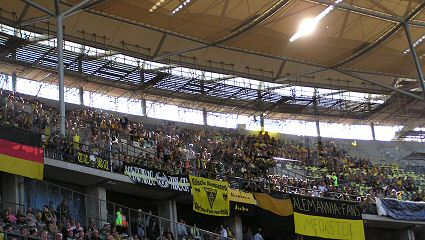

| Werder Bremen - Alemannia Aachen (3-2) 29 mei 2004 |
Werder Bremen -
Alemannia Aachen (3-2) 29 mei 2004
Het Olympisch stadion in Berlijn.
Voor de finale werd er nog een andere wedstrijd
afgewerkt.

Met
71.683 toeschouwers was het stadion uitverkocht.
Eric van der Luer nog in zijn nette pak.
Prachtige choreografieën, spandoeken en vlaggen.
Eine geile Mannschaft.....
Werder Bremen had ook mooie sfeerartikelen meegenomen.
De aftrap. Negentig minuten later gaat de beker
naar Werder dat de
wedstrijd met 3-2 won.
Een dag later op de markt in Aken.
Alemannia heeft zowel naast de beker als de
promotie gegrepen,
maar gaat toch Europa in!
Foto's met dank aan Peter en...
...aan Magda.
© Koempels Pleasure Dome